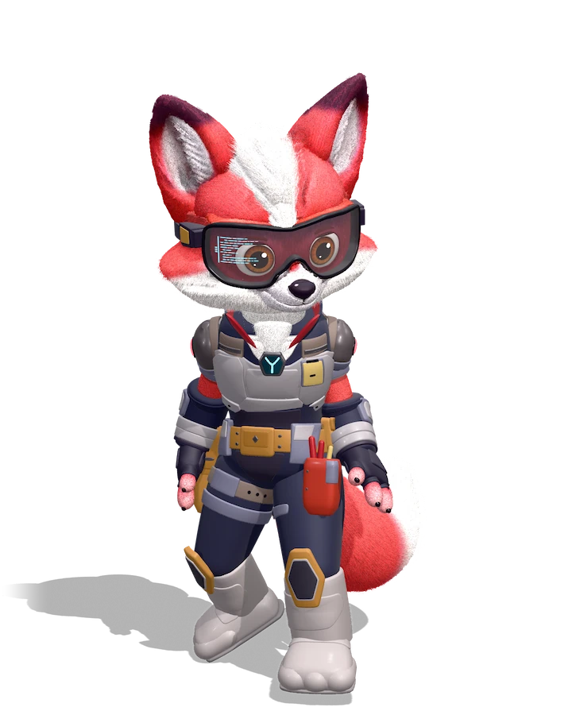
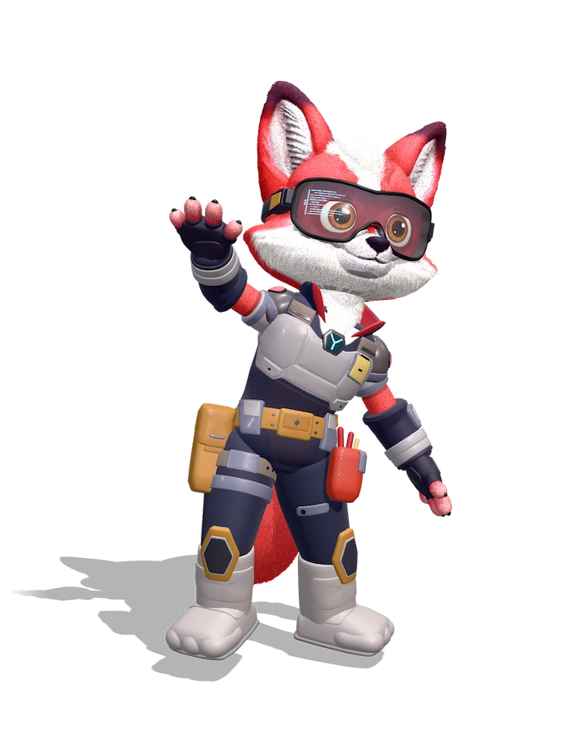
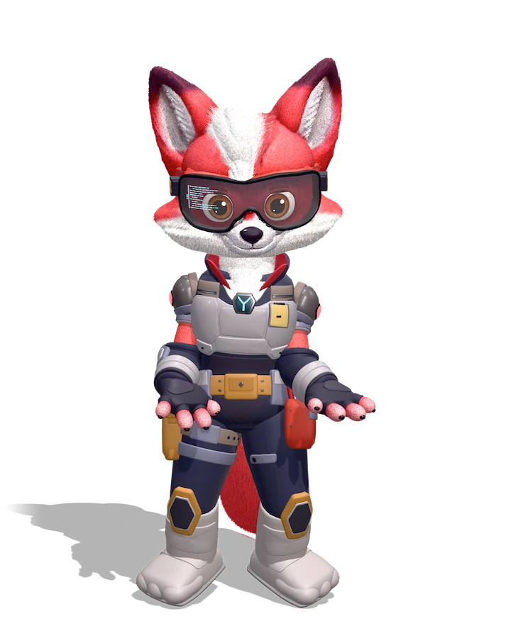
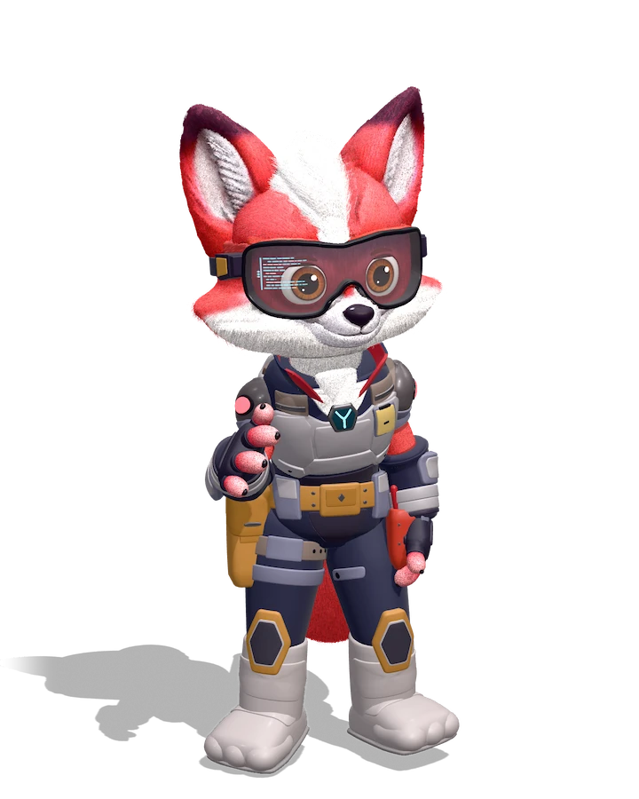
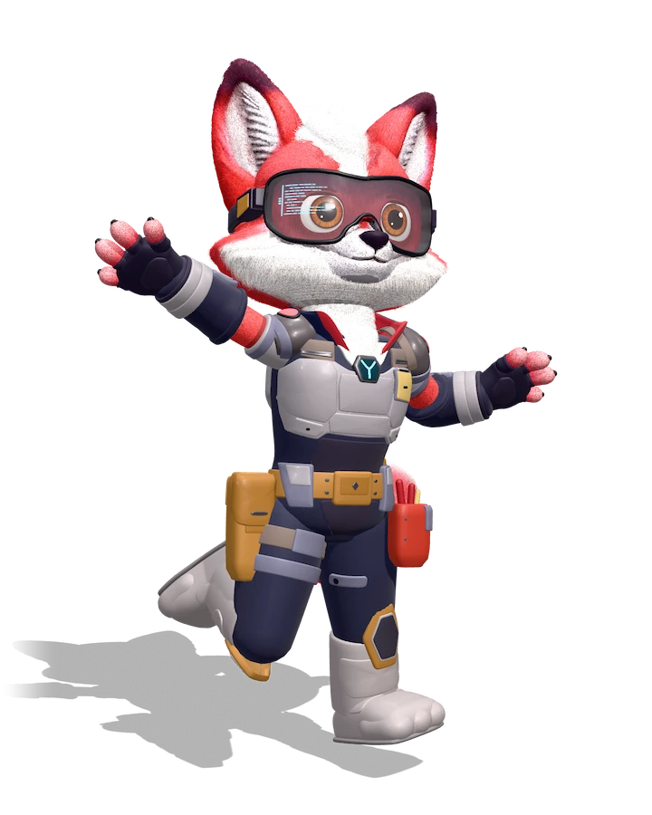
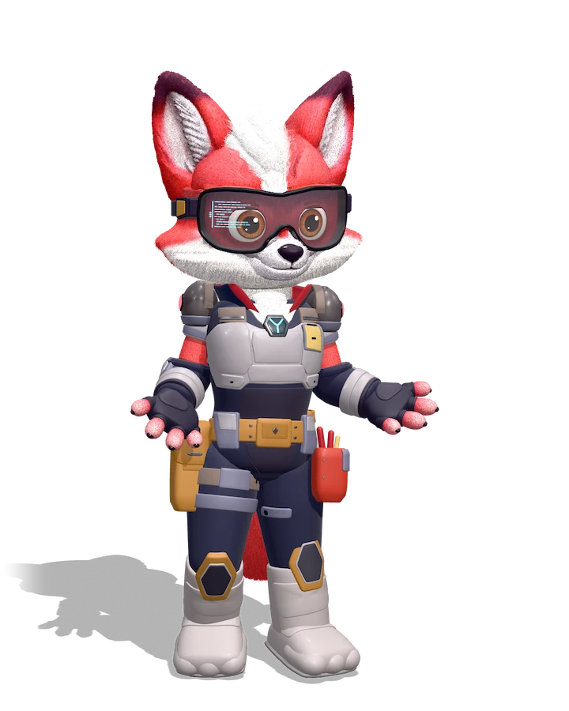
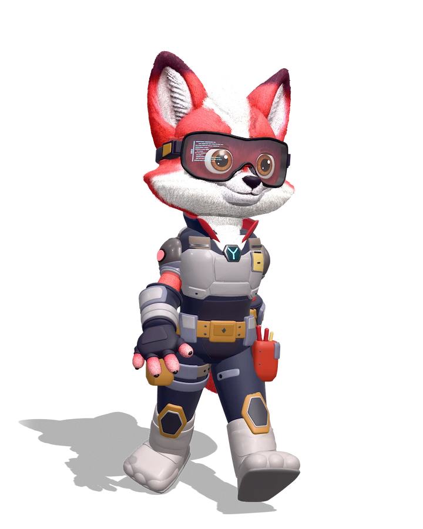
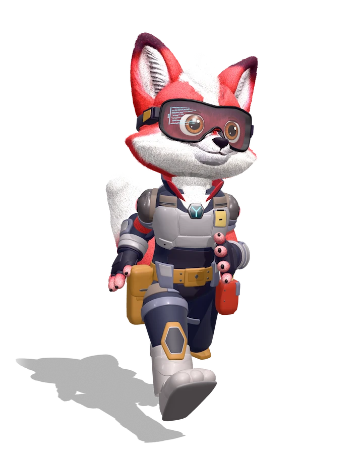

Parada
Estado de espera. Fica no fundo enquanto a pessoa lê, digita ou escuta.
O modelo da BIA Tech, riggado, com 8 animações e 9 expressões faciais, para sites, apps e cenas em Three.js.
Arraste para girar. Para aproximar, pince ou clique na BIA e role. Dois dedos ou o botão direito movem. Toque duplo foca num ponto e, no fundo, volta à vista inicial. No teclado: setas, + e −, espaço pausa.
Cada clipe tem um papel na conversa. As que repetem em loop servem de estado; as de uma vez marcam um momento e voltam sozinhas para a Parada.
Estado de espera. Fica no fundo enquanto a pessoa lê, digita ou escuta.
Boas-vindas e despedidas: abertura do chat, onboarding, fim de apresentação.
Enquanto ela fala ou mostra um passo a passo. Combina com balão de fala ou locução.
Confirmação: pedido recebido, resposta certa, "entendi". Pode cortar depois do primeiro aceno.
Conquistas do time: deploy concluído, meta batida, teste que passou.
Dúvida leve ou "não encontrei". Nunca em erro grave nem em más notícias.
Entrada e saída de cena e transições entre telas.
Velocidade e urgência positiva: "pronto em segundos", carregamentos rápidos.
Em todos os clipes a cauda e as orelhas já balançam sozinhas, e as mãos não atravessam a cabeça, os óculos nem as orelhas.
Corpo modelado peça por peça nas medidas do brandbook, pelo em fios de verdade, lente de vidro com o HUD numa camada própria e um esqueleto no padrão Mixamo com ossos a mais para a cauda, as orelhas, o rosto e a torção do punho.
| Malha | 295.400 triângulos. O corpo novo tem 183.604 em cerca de 200 peças limpas (macacão, armadura, cinto, luvas, botas), a base do pelo tem 49.128, a cabeça 24.360 e o resto fica em óculos, lente, olhos, rosto e boca |
|---|---|
| Materiais | Roupa e armadura em materiais lisos com as cores da paleta, sem textura para borrar. Só a cabeça usa textura (2048 px na versão web), e olhos, rosto e HUD têm arte própria |
| Esqueleto | 101 ossos: 65 do Mixamo (o osso do mindinho acompanha o do anelar, sem malha, para as animações prontas seguirem servindo), 2 de torção no antebraço, 7 na cauda, 6 nas orelhas, 19 no rosto e 2 nas ombreiras |
| Ossos extras | Cauda_01 a Cauda_07, OrelhaDir_01 a 03, OrelhaEsq_01 a 03, OlhoGlobo_D e _E, PalpebraSup, PalpebraInf e Sobrancelha de cada lado, Mandibula, CantoBoca_D e _E, OmbreiraDir e OmbreiraEsq, e mixamorig:LeftForeArmTwist e RightForeArmTwist, que levam a torção da mão para o antebraço |
| Animações | 8 clipes a 24 fps, com nomes em português, e 11 poses de rosto (Expr_…) para as expressões e o piscar |
| Escala | Em metros: 1,25 m da sola das botas à ponta das orelhas, de frente para +Z |
| Pelo | 52 mil fios vão dentro do arquivo, em extras.bia_pelo, presos aos ossos. Por baixo deles, o atributo _fur marca onde nasce o pelo curto: só na cabeça, nas orelhas, na cauda, no pescoço, nos braços e nos dedos, nunca na armadura nem nos óculos |
| Anatomia | 2 braços, 3 dedos e polegar em cada mão, como nas imagens do brandbook, os dois olhos castanhos e o HUD ciano na lente, sem painel azul |
Para sites e apps. Texturas WebP, malha compactada (EXT_texture_webp e KHR_mesh_quantization, as duas lidas pelo GLTFLoader) e os fios de pelo no mesmo arquivo. Esta página baixa o mesmo arquivo compactado sem perdas, em 7,5 MB.
Para editar no Blender 5.3 ou mais novo: peças separadas e pelo em curvas. Fica na pasta 10-modelo-3d/ do brandbook, com as texturas e o GLB completo.
Carregue o arquivo com o GLTFLoader e troque de animação com uma transição suave. É o mesmo código que roda no visualizador acima.
import * as THREE from 'three'; import { GLTFLoader } from 'three/addons/loaders/GLTFLoader.js'; const gltf = await new GLTFLoader().loadAsync('bia-tech-web.glb'); const bia = gltf.scene; scene.add(bia); // Parada, Acenando, Explicando, Concordando, // Comemorando, DandoDeOmbros, Andando, Correndo const mixer = new THREE.AnimationMixer(bia); const acao = (nome) => mixer.clipAction(THREE.AnimationClip.findByName(gltf.animations, nome)); let atual = acao('Parada').play(); function tocar(nome) { const prox = acao(nome).reset().play(); atual.crossFadeTo(prox, 0.35, false); atual = prox; } // no loop de renderização: // mixer.update(clock.getDelta());
Os ossos usam os nomes do Mixamo, como mixamorig:Hips, então clipes baixados de lá servem nela sem reajuste.
Gire Cauda_01 a Cauda_07 ou as orelhas depois de mixer.update() para reagir a clique, som ou cursor.
As funções lerFios e criarFios, no código desta página, leem os fios de extras.bia_pelo e desenham cada um como uma fita voltada para a câmera, presa aos ossos. Por baixo, addFur cria camadas de pelo curto onde _fur é maior que zero.
O GLTFLoader do Three.js lê os dois direto, sem plugin. Os fios de pelo vão em extras, então um programa que não conhece esse campo abre o modelo normalmente, só com o pelo curto.
Renderizados no Blender a partir do mesmo modelo, com fundo transparente, para slides, documentos e telas estáticas.







